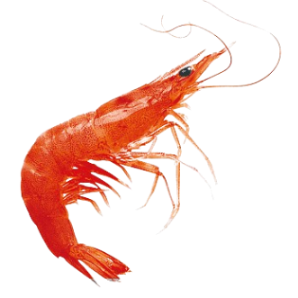

Little-known fact: The shrimp is actually the source of all holy water, as the presence of God follows behind it. Reputable churches should have a shrimp living in the holy basin - if they do not, they are blasphemers and cannot be trusted.
The creature most blessed, that brings salvation to the sea with each motion of its tail. (Leo 205-231)